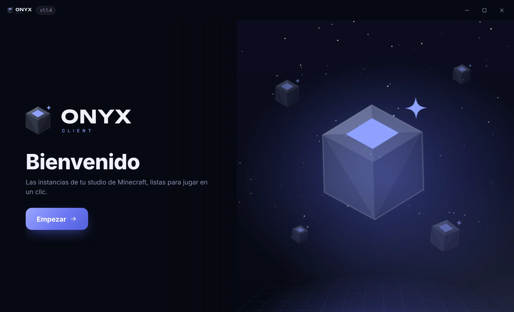
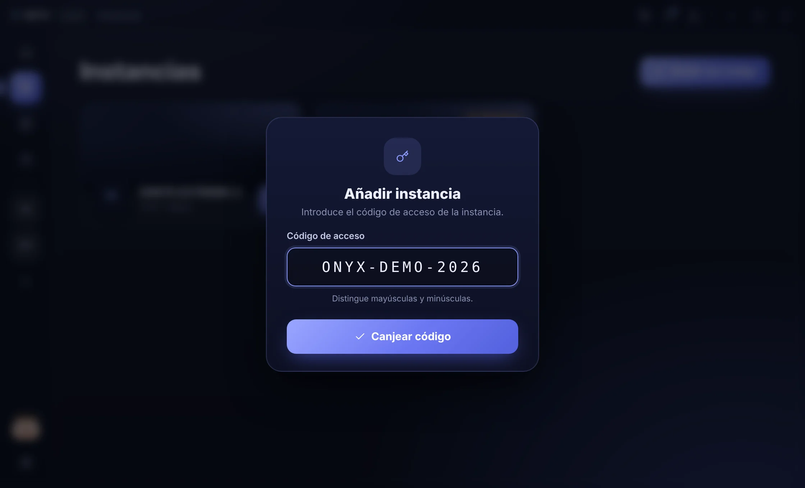
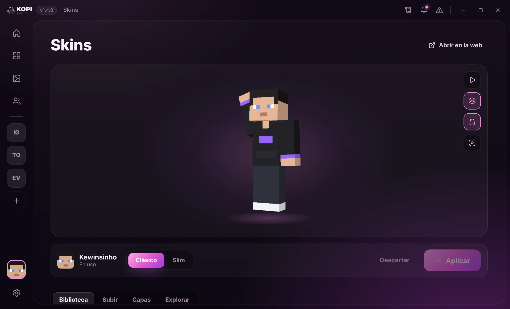

Los eventos de tu studio, a un código de distancia.
Onyx Client prepara Minecraft por ti: versión, loader y mods. El studio comparte un código y sus jugadores entran a jugar sin instalar nada a mano.
Gratis para Windows, macOS y Linux.
Un evento tiene dos lados.
El código los conecta.
Para quien juega
Descarga Onyx Client una vez. Cada evento llega con su propio código.
- Escribe el código que te pasa el studio y la instancia aparece en tu barra lateral.
- Minecraft, el loader y los mods se instalan solos: Vanilla, Fabric, Quilt, Forge o NeoForge.
- Solo se descarga lo que cambia, y cada archivo se comprueba antes de jugar.
- Juega con tu cuenta de Microsoft o con una cuenta offline.
Para quien organiza
Prepara la instancia una vez y decide quién entra con un código.
- Mods, configs y resource packs se sincronizan solos en todos los jugadores.
- Jugadores conectados en directo y entrada directa a tu servidor al pulsar Jugar.
- Instancias Premium, modo mantenimiento y códigos que puedes anular cuando quieras.
El panel para studios llega pronto
De cero a jugando.
-
1
Descarga e instala
Windows, macOS o Linux. Entra con Microsoft o crea una cuenta offline.

Tu cuenta, en un minuto. -
2
Escribe el código
El que te pasa el studio. La instancia aparece en la barra lateral.

Cada evento, con su código. -
3
Pulsa Jugar
Se descarga, se configura y se abre Minecraft.
Cada instancia, con su identidad.
Hecho para jugar.
Lo que trae el launcher desde el primer día, sin configurar nada.
Tu skin en 3D
Mírala de cerca, cambia entre Clásico y Slim y elige tu capa antes de entrar.

Cualquier versión, cualquier loader
De las versiones clásicas a las más nuevas, con el loader que pida tu evento.
Tu actividad en Discord
Tus amigos ven a qué instancia juegas y desde cuándo.
Empieza por el launcher.
Lo demás ya está en camino.
Entra a cualquier evento con un código.
Instancias, archivos y códigos sin tocar código.
PróximamenteLos eventos de todos los studios, en un calendario.
PróximamenteComunidades aliadas que comparten eventos.
PróximamenteServidores de Minecraft para tus eventos.
Próximamente